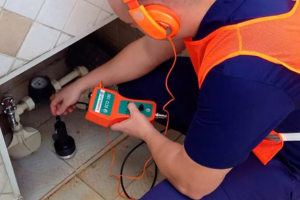
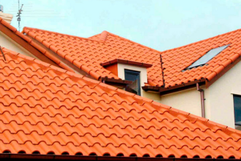
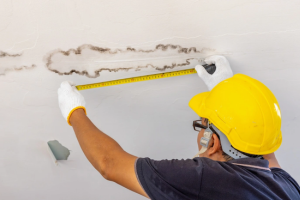

Soluções completas para vazamentos, hidráulica, telhados e reformas.
Atendimento profissional para residências, condomínios, empresas e estabelecimentos comerciais.

Localização precisa de vazamentos
Vazamentos ocultos podem gerar aumento na conta de água, infiltrações, mofo e danos estruturais.
Realizamos inspeção técnica para identificar a origem do problema e orientar a melhor solução.
- Conta de água elevada
- Umidade em paredes
- Infiltrações ocultas
- Vazamentos subterrâneos
Serviços hidráulicos completos
Executamos reparos e instalações hidráulicas com rapidez e segurança.
- Torneiras
- Registros
- Caixas acopladas
- Pias e tanques
- Ralos
- Tubulações

Reparos e manutenção de telhados
Goteiras e infiltrações costumam começar por falhas simples que, quando ignoradas, geram grandes prejuízos.
- Troca de telhas
- Correção de goteiras
- Calhas
- Rufos
- Vedação

Correção de infiltrações
Identificamos a origem da umidade e aplicamos a solução adequada para evitar recorrência.
- Paredes úmidas
- Mofo
- Bolhas na pintura
- Umidade em lajes
Reformas residenciais e comerciais
Pequenas e médias reformas executadas com organização, planejamento e acabamento profissional.
- Pintura
- Acabamentos
- Reparos estruturais leves
- Manutenção geral
Precisa de um orçamento?
Nossa equipe está pronta para ajudar.